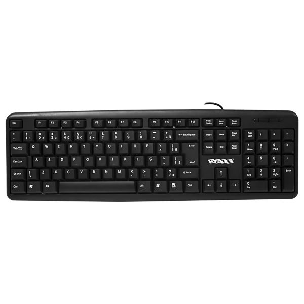
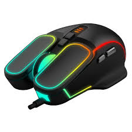
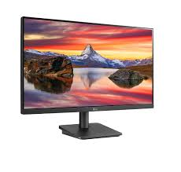
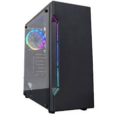

El teclado es un dispositivo de entrada que utiliza una disposición de teclas, para que actúen como interruptores electrónicos que envían información a la computadora.

El mouse es un dispositivo de entrada diseñado para manipular objetos en la pantalla de la computadora y ayudarlo a usted, el usuario, a interactuar con la computadora.

El monitor del computador, también conocido como pantalla, muestra la información de tu equipo como imágenes y textos, que son generados gracias a una tarjeta de video que se encuentra en el interior de la torre del computador.

El gabinete es el armazón que contiene los principales componentes de hardware de una computadora: su CPU, tarjeta madre, microprocesador, memoria, disco rígido y unidades internas (lector de CD o DVD, etc.).